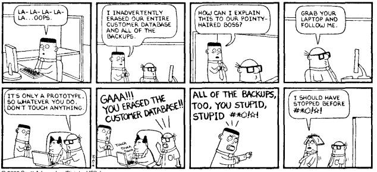

The diagram below represents the workflow and available operations for each development environment:
| Action/Environment | Save test data (sql or zip) | Drop/Create DB | Apply Baseline | Run Change Scripts | Import Test Data (sql or zip) | Run Data Change Scripts |
| DEV | optional | x | x | x | x | x |
| STG | x | x | ||||
| PROD | x | x |